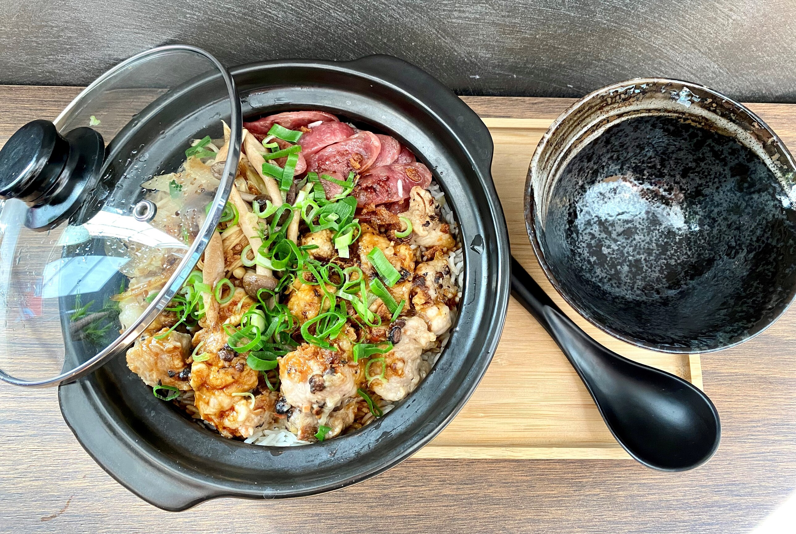

La Maison
L'âme de Hong Kong, à Limpertsberg.
Bo Zai Fan apporte l'âme de la street food hongkongaise au cœur de Limpertsberg. Baptisé d'après le plat cantonais de riz cuit en cocotte d'argile, le restaurant propose des dim sum faits maison, du riz bo zai fan au fond croustillant et des soupes de nouilles façon Hong Kong. Reconnu par le Gault&Millau Luxembourg avec une note de 12/20, il s'est forgé une clientèle fidèle grâce à la précision et à la générosité de ses préparations artisanales.
Dim sum faits main
Chaque pièce pliée et cuite à la vapeur à la commande — Siu Long Pau, Ha Kao, Fan Koh et bien d'autres.
Riz en cocotte d'argile
Riz cuit sur braise vive, fond croustillant, garnitures au choix — le plat signature qui donne son nom à la maison.
Soupes de nouilles HK
Bouillons profonds, garnitures généreuses — bœuf, poulet frit, scampis ou tofu. La tradition hongkongaise.